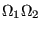

Next: Line search
Up: Convergence criteria
Previous: Thermomechanical iterations
Contents
Contact
In the presence of contact the convergence conditions in the previous section
are slightly modified. Let us first repeat the general convergence check
strategy (coded in checkconvergence.c):
- If, at the end of an iteration, convergence is detected then:
- a new increment is started (unless the step is finished)
- it is checked whether the size of this increment has to be decreased
w.r.t. the present increment size
(slow convergence) or can be increased (fast convergence)
- else (no convergence detected)
- it is checked whether the number of allowable iterations has been
reached, if so the program stops
- it is checked whether divergence occurred in the following order:
- due to non-convergence in a material user subroutine
- the force residual is larger than in the previous iteration AND larger
than in the iteration before the previous iteration (only done after
 iterations). Let us call this check the major divergence check.
iterations). Let us call this check the major divergence check.
- due to the violation of a user-defined limit
(e.g. temperature change limit, viscous strain limit)
- if divergence is detected then
- if the increment size is fixed by the user
the program stops
- else a new increment is started with a smaller size
(unless the size is smaller than a user-defined quantity, in which case the
program stops)
- if no divergence is detected then a check is performed for too slow
convergence. If this is the case then
- if the increment size is fixed by the user
the program stops
- else a new increment is started with a smaller size
(unless the size is smaller than a user-defined quantity, in which case the
program stops)
- if no divergence is detected and the convergence is not too slow the
next iteration is started.
In the case penalty contact was defined an additional parameter iflagact is
defined expressing whether the number of contact elements changed
significantly between the present and the previous iteration. In the latter
case iflagact=1, else it takes the value zero (default). Whether a change is
significantly or not is governed by the value of the parameter delcon, which
the user can define underneath a *CONTROLS,PARAMETERS=CONTACT card (default is
0.001, i.e. 0.1 %).
Now, in the case of node-to-face penalty contact the standard convergence check algorithm is
modified as follows:
- If iflagact=1 at the end of the present iteration the counter for
and
 is reset to zero and the value of
is reset to zero and the value of  is incremented by 1.
is incremented by 1.
- Mechanical convergence requires iflagact to be zero.
In the case of face-to-face penalty contact the criteria are modified as
follows:
- Mechanical convergence requires iflagact to be zero.
- If convergence occurred the check whether the next increment must be
decreased is not done
- If no convergence occurred then
- the check whether the number of allowable iterations has been reached is
not done
- the major divergence check (see above) is only done if one of the
following conditions is satisfied:
- the present force residual exceeds 1.e9
- iflagact is zero (no significant change in contact elements). If, in
this case, the major divergence check points to divergence and the solution
condition
 is
satisfied the aleatoric flag is set to 1. Physically, this means that the
force residuals are increasing although the displacement solution does not
change much, i.e. a local minimum has been reached. In order to leave this
minimum a percentage of the contacts (default: 10 %; can be changed
with the *CONTROLS,PARAMETERS=CONTACT card) is removed in an aleatoric way
in order to stir the complete structure.
- the number of contact elements is oscillating since the last two
iterations (e.g. the number of contact elements increased in the present
iteration but decreased in the previous one or vice versa) and there is no
significant change in the sum of the residual force in the present and
previous iteration (compared to the sum of the residual force in the
previous iteration and the one before the previous iteration). Physically
this means that solution is alternating between two states.
- if divergence is detected not only the time increment is decreased, also
the spring stiffness in case of linear pressure-overclosure and the stick
slope are reduced by a factor of 100 (this number can be changed with the *CONTROLS,PARAMETERS=CONTACT card). This factor (variable ``kscale'' in the
code) is reset to one at the
next convergence detection in which case the iteration is continued until
renewed successful convergence for kscale=1.
- the too slow convergence check is replaced by a check whether the number
of iterations has reached the value of 60 (this number can be changed with the *CONTROLS,PARAMETERS=CONTACT card). In that case the spring stiffness in case of linear pressure-overclosure and the stick
slope are reduced by a factor of 100 (this number can be changed with the *CONTROLS,PARAMETERS=CONTACT card). This factor (variable ``kscale'' in the
code) is reset to one at the
next convergence detection in which case the iteration is continued until
renewed successful convergence for kscale=1). The time increment is NOT
decreased, unless this is already the second cutback or higher.
Next: Line search
Up: Convergence criteria
Previous: Thermomechanical iterations
Contents
guido dhondt
2018-12-15